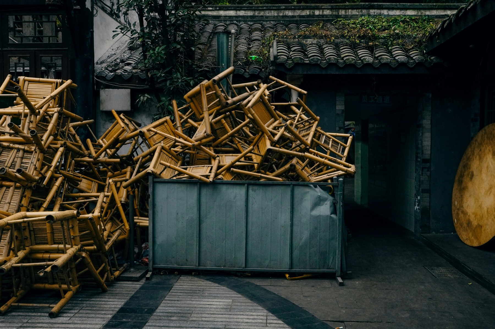
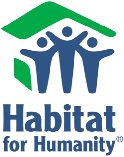
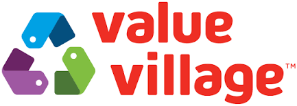
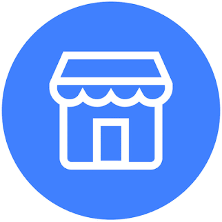
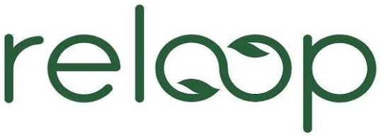
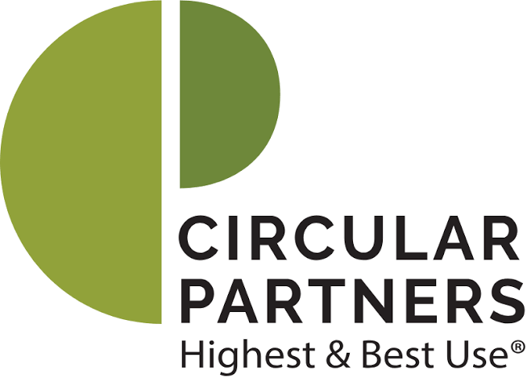
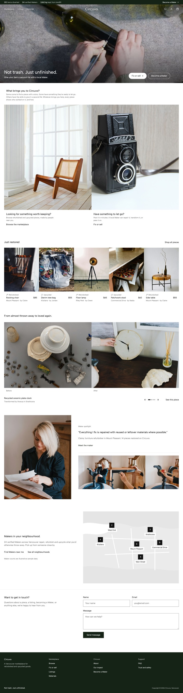
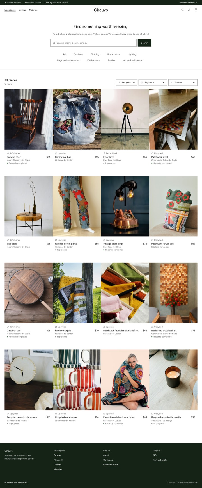
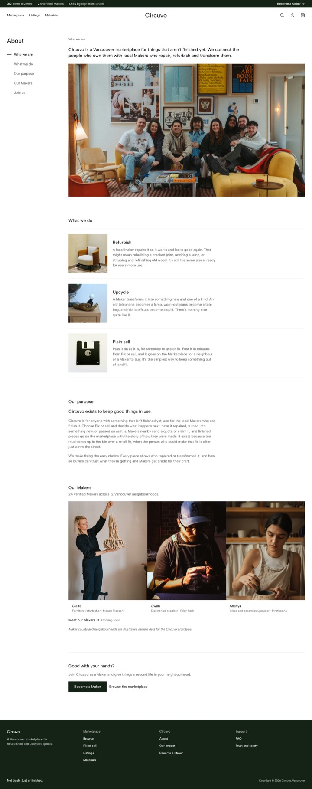
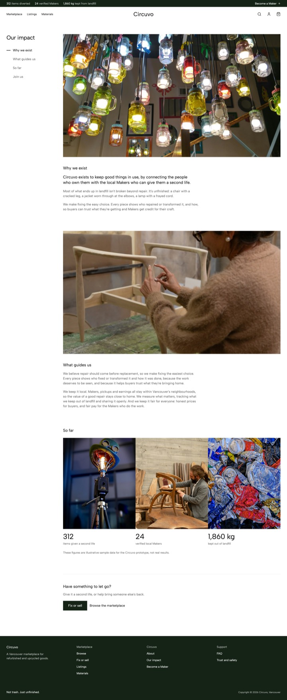

Circuvo
Repair and upcycling sit outside Canada’s waste system, which sent 27.5 million tonnes to disposal in 2024. I came up with Circuvo, a local marketplace where Makers repair, refurbish and upcycle what people no longer use, and led a team of four from research to a live site. It won 2nd prize at the Product BC Buildathon 2026.
The brief
Product BC’s Buildathon asked teams to research a real problem, write a design brief from the first week of research, and build something people could experience by Demo Day.
Judges scored a seven minute pitch on problem and validation, solution and design, execution and prototype (the biggest share), viability and communication. Their one question: does the prototype show the solution works?
The gap
Most of what Canada throws away could be reused, repaired, refurbished or upcycled instead.
Most things people let go aren’t broken. In our survey, 47% let items go because they feel outdated, and no one used a repair or upcycling service. Donating is the default.
Selling as is already has homes (Facebook Marketplace, Kijiji). Getting something fixed or transformed by someone local and trusted does not.

27.5 million tonnes
of waste sent to disposal in Canada in 2024. Less than a quarter was diverted, and that rate has slipped since 2022.
Repair, reuse and upcycling aren’t counted at all.
Statistics Canada, 2024
“How might we connect people with trusted local Makers, so the things they let go are repaired or transformed before they reach disposal?”
Our vision: to help build a more circular and sustainable Canada where products stay in use longer, waste is minimized, and repair, reuse and creative transformation become the default before disposal.
Outdated, not broken
Offer upcycling beside repair, not repair alone.
Sentimental value
Give owners a way to get their own item back, improved.
Cost and trust
Show prices upfront and name the Maker on every piece.
Everything gets thrown out
Welcome every category instead of picking one.
Problem, personas, research and competitors, mapped on one board before any design.
View FigJam board ↗I built a survey on how people let go of things, what they repair and what would make them use a service. 17 people answered. The sample is small, so we treated it as early direction.
View survey ↗Outdated, not broken
Items leave because they feel outdated (47%), are no longer needed (41%) or are easier to replace (41%), not because they fail.
Repair is wanted
82% would likely repair an item if it cost less than replacing it. No one said they weren’t interested in repair.
Upcycling is a real draw
82% are interested in having an item creatively transformed, almost exactly matching repair.
Cost comes first
Lower cost was the strongest reason to use a service, followed by clear pricing, trusted Makers and convenient pickup.
Five interviews, using a guide Lucas wrote, with an ethics professor, an army officer, a technical product manager, a student and a business professional.
Sentiment preserves
All five had kept an object because of its emotional significance.
Few look for options
Most don’t explore alternatives before disposal. Two considered none at all, including the ethics professor.
No single way to upcycle
Some want the Maker to decide, one prefers to do it themself, and others say it depends on the item or the cost.
It depends on the object
The journey should start with the item, not a choice between repair, upcycle or sell.
I reviewed municipal recycling, thrift and donation networks, online marketplaces and circular platforms. Here is what each does well, and where it stops.
Universal access, but only for cans and paper.

Social impact, but rejects most items.

Second hand at scale, with no repair.
Huge reach, but chaotic and unreliable.

Easy to list, but a high rate of scams.
Local selling, with no logistics or repair.

Device pickup, but electronic waste only.

Spotlights Makers, but sells materials only.
Lead with cost and ease
Sustainability supports the message but isn’t the main driver. Even people who care about it discard without looking at alternatives.
Compete with donation
Donating is the habit to shift, since no one uses a repair or upcycling service today.
Keep “give it back to me” central
76% have kept a damaged item for sentimental reasons, and all five interviewees kept something meaningful.
No single platform in Canada connects owners, local Makers and buyers around repair and upcycling.


Owners, buyers and Makers meet in one loop. I mapped a flow for each, and they became the three MVPs.
Taps Fix or sell, chooses repair, upcycle or sell as is, and adds photos and details. For repair or upcycle, compares Makers’ quotes and accepts one.
Searches the Marketplace, sees who fixed or transformed each piece, adds it to the cart and checks out.
Opens a listing, sends a quote from its item page, and starts once the owner accepts. Materials are paid when work begins, the rest on approval.
I first built a clickable prototype as a single Claude artifact covering all three MVP flows: an owner routing an item to sell, refurbish or upcycle, a buyer shopping pieces with the Maker named, and a Maker accepting a job.
It also had onboarding, messaging, cart and checkout, so we could test the whole loop with people before Demo Day. It then became the base for the live site.
Explore the interactive prototype ↗Five UX testing sessions on the prototype showed what to fix next and where the model still needs proof.
What testers struggled with shaped the design, and most of what they asked for is now in the live build.
The dots beside each finding follow this order.
Four of five testers stumbled on the same screen. They couldn’t tell a repair from a giveaway, so the owner flow changed twice.
“How much do you want to be involved?”
“Do you want this item back?”
Three plain choices: Repair/Refurbish, Upcycle or Sell it as is
Plain sell, Refurbish and Upcycle meant nothing without an explanation.
A kind icon for each, introduced in onboarding and shown wherever a kind appears.
One photo and a short description weren’t enough to trust a piece.
Up to three photos on every listing, and the owner’s full note on its page.
People wanted to ask questions without leaving the site.
Messages on every listing, opening right beside the piece.
They wanted to see work already finished through Circuvo.
A before and after slider on the homepage, and Recently completed on listings.
Paying in the app, with refunds, would feel safer than Facebook Marketplace.
Pay and accept: Circuvo holds the money until the owner approves the work.
Match Makers to demand
People let go of clothing and textiles most (76%), then kitchen and household items (59%), so Makers need to cover more than one craft.
Keep Makers on platform
After a first match, Makers could take work offline, so protection and care credit need testing.
Validate with owners
Owners were the hardest group to reach and need deeper research.
Account and role switching
Testing showed Maker status not saving and My listings hard to find.
Accessibility
Add visible focus outlines, and 16px text in form fields on phones.
Name
Circuvo isn’t final and needs a trademark check.

+ Click a screen to view it in detail




The design direction is calm, editorial and photo led, inspired by Toteme, Everlane and Markaware. Quiet and generous with space, so repaired and remade pieces can speak.
Four pillars shaped the build. Each one can be seen on the live site.


Every piece is the only one. Its listing says so, and shows how it was made, step by step.
One Fix or sell screen: Repair/Refurbish, Upcycle or Sell it as is. Each opens only the field it needs.
Makers post photos as they work. Owners follow every stage and approve the finished piece before the labour is paid.
Materials lists free fabric, wood and parts from neighbours and local businesses, for Makers to claim.
I moved the prototype into a Vite and React project with shadcn/ui and my own DESIGN.md, built through Claude Code and deployed on Vercel. It works on phone, tablet and desktop, with log in as Owner, Maker or both, and the quote, compare and accept flow.
NoteStill a concept: Give to a Maker, the My stuff inventory, care credit and wishlist alerts. Photos from Unsplash+.
I learned how to take a product from research to a live site, with a design system setting clear rules for every screen.
I also learned to validate earlier. Our strongest decisions came straight from what people told us, and the biggest gaps came from groups we reached late.
Next, I’d recruit Makers in furniture and textiles to match demand, build Give to a Maker, and test what keeps owners and Makers coming back. I’m also setting Circuvo up properly with legal advice.
TeamBuild Different: Pranjal Gorantyal (research), Lucas Oishi (market intelligence) and Shourya Sharma (go to market).
ThanksMatt and Tony, our Product BC mentors, Ashley for reviewing our surveys and prototype, and Elissa for her design feedback.